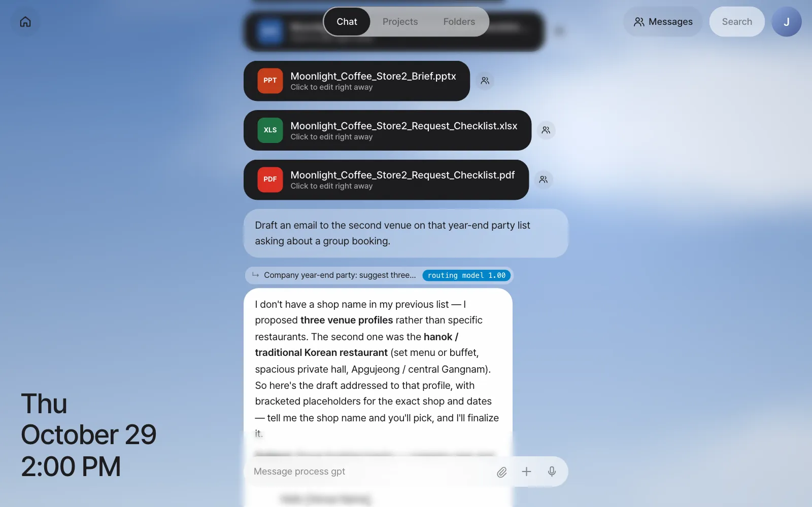
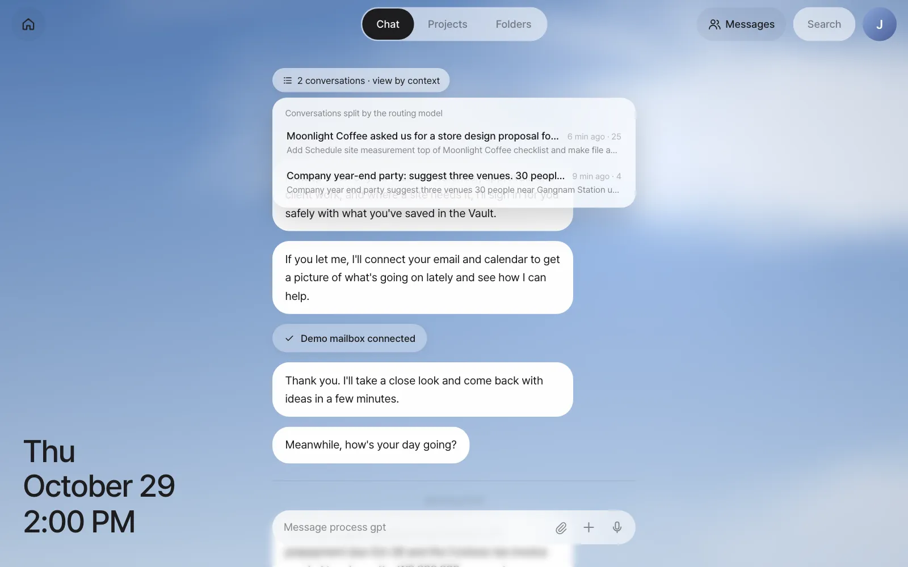
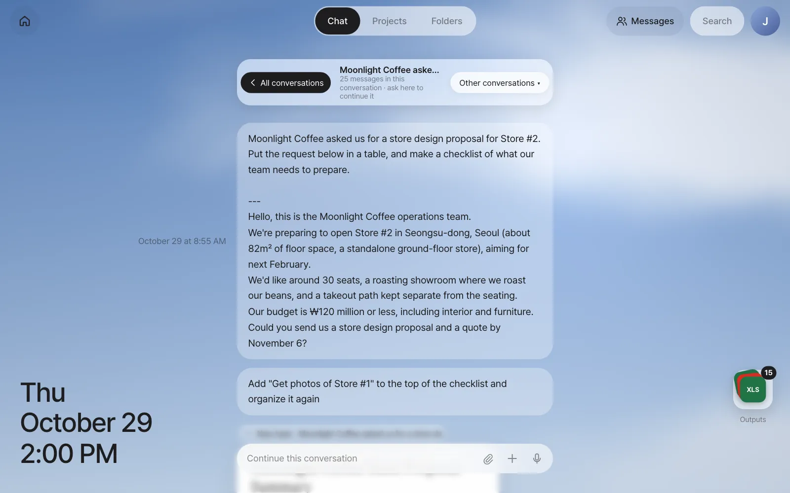
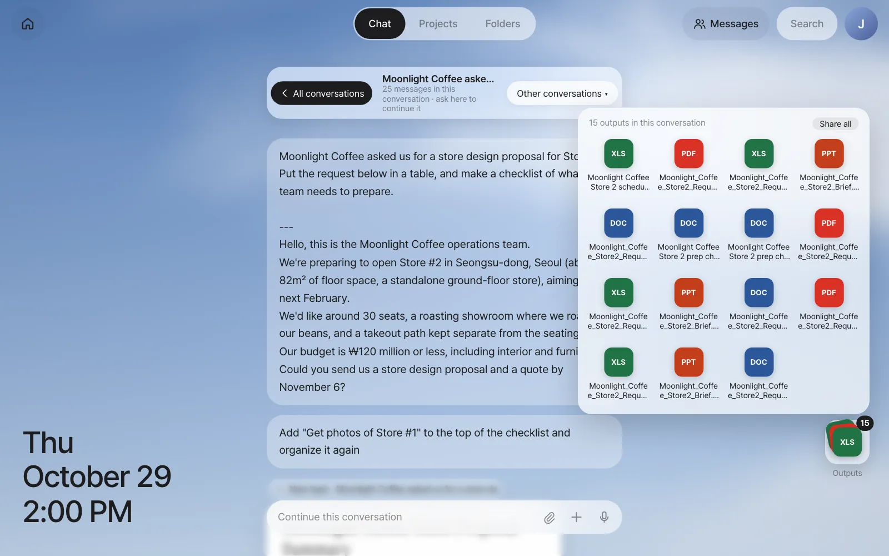

In one chat window, alternate between Moonlight Coffee work and planning the year-end party, and watch the assistant split the conversation by working out, for each message, which story it follows up on. Then pick a single conversation from the conversation list, and expand and open the output stack where the files made in that conversation pile up.
Why conversations should split on their own#
In Chapter 3, you only talked about Moonlight Coffee. But real work doesn't arrive one thing at a time. You look up venues for the year-end party while editing the Moonlight Coffee checklist, then come back to the Moonlight Coffee schedule. In a typical AI chat, you'd have to do one of two things.
- Make a new chat room yourself for each topic and pick the right one as you go — it's tedious, and easy to pick the wrong room.
- Mix everything in one room — the assistant gets confused about which one "that checklist" is, and things are hard to find later.
Process GPT Lite takes a third path. It keeps one chat window, and each time a message comes in, the context router in front of the assistant (a component that sends a message to the right conversation) decides "which story does this follow up on, or is it a new topic?" and sends it to that conversation. You just talk, and the assistant does the sorting.
The router must be connected
The current install bundle leaves out the context router and the routing model, so ask your operator to connect them before you follow this chapter (Chapter 1). On a server without them, every message continues in a single conversation, and the N conversations bar and the output stack in this chapter don't appear.
How it decides#
The router takes your recent conversations (their titles and summaries) as candidates and picks which one the new message follows up on.
| Stage | What it does |
|---|---|
| Narrow the candidates | Even with many conversations, it passes no more than 6 to the routing model. It always keeps the two most recent conversations, and picks the rest by how much they share words with the message or how close they are in meaning |
| Small routing model | A fast, cheap, dedicated routing model chooses first ("routing model" on the line above the answer) |
| Ask a bigger model again | If the routing model isn't sure, it asks the default AI model again and measures confidence from the probability of that answer ("routing model→logprob") |
| Stay put if unsure | If confidence is below the threshold, it doesn't move the message and stays in the conversation you were in |
The decision shows on the small line above the answer.
| What you see | Meaning |
|---|---|
| ↳ New topic · (title) | A new conversation was started |
| ↳ (title) | It was added to the conversation with that title |
| routing model 1.00 | The routing model chose it, with confidence 1.00 (the maximum) |
| routing model→logprob 0.99 | The routing model hesitated and asked the default AI model again, with confidence 0.99 |
| Directly in the conversation 1.00 | You sent it from inside the conversation, so it went there without a decision (Try it 2 below) |
| (nothing) | When there's no particular basis for the choice (such as the first message), the mark is left out |
A conversation's title is the start of the message that began it. So when you bring something up for the first time, say what it's about at the start, like "Moonlight Coffee…" or "Company year-end party…", and it's easy to recognize in the list.
Try it 1 — mix topics as you talk#
In Chapter 3, you made a Moonlight Coffee conversation. Now you slip in other work and come back. To make each decision easy to check, send each message and wait for its answer before sending the next. You can also send without waiting. A follow-up to a conversation that's already in progress goes to that conversation, shows as Waiting, and is answered after the previous answer finishes. A message that goes to a different conversation doesn't wait and runs side by side.
| Order | What to send | Expected decision |
|---|---|---|
| 1 | Company year-end party: suggest three venues. 30 people, near Gangnam Station, under ₩50,000 per person. |
New topic |
| 2 | Add "Schedule the site measurement" to the top of the Moonlight Coffee checklist and make the file again. |
Continues the Moonlight Coffee conversation |
| 3 | Draft an email to the second venue on that year-end party list asking about a group booking. |
Continues the year-end party conversation |
| 4 | Make a Moonlight Coffee Store #2 schedule in Excel, working back from submitting the proposal on November 6 to opening next February. Name the file "Moonlight Coffee Store 2 schedule.xlsx". |
Continues the Moonlight Coffee conversation |
These are the decisions from our run.
| Order | Decision | Basis shown | Output |
|---|---|---|---|
| 1 | New topic | routing model→logprob 1.00 | A "Gangnam Team Dinner Venue Options" document card with three venue options |
| 2 | Continues the Moonlight Coffee conversation | routing model 1.00 | The edited Moonlight Coffee Store 2 prep checklist.docx (in our run, the four summary files from Chapter 3 were made again too) |
| 3 | Continues the year-end party conversation | routing model 1.00 | A group booking inquiry email draft, as a speech bubble |
| 4 | Continues the Moonlight Coffee conversation | routing model 1.00 | Moonlight Coffee Store 2 schedule.xlsx |

Check: Answer 2 has "↳ Moonlight Coffee asked us for…" above it, and answer 3 has "↳ Company year-end party: suggest…" above it. That means it took "checklist" in message 2 as a follow-up to the Moonlight Coffee story, not the party, and in message 3 it found "that year-end party list" in the earlier party table. (In our run, the list held three kinds of venue rather than named restaurants, so the draft for the second one came with placeholders for the restaurant name and date.)
When the decision is wrong
The routing model can be wrong too. A completely different topic might be added to an earlier conversation, or the other way around. If the line above the answer isn't what you expected, go into the conversation you want and say it again, as in Try it 2 below. A message sent from inside a conversation skips the decision and goes straight to that conversation.
Try it 2 — view just one conversation from the list#
Scroll to the top of Chat and you'll find the 2 conversations · view by context button. Click it to open the list of conversations the routing model split. Each row shows the title, when it last continued, the number of messages and a summary of the latest request.

Click the Moonlight Coffee conversation and Chat changes to show only that conversation's messages. The address also changes to /chat/c/…, so if you bookmark it, you can come straight back to that conversation later.

| Button or mark | What it does |
|---|---|
| ‹ All conversations | Goes back to the original chat with all messages mixed |
| "N messages in this conversation · ask here to continue it" under the title | What you send from this screen goes to this conversation without a decision |
| Other conversations ▾ | Opens the list again to move to another conversation |
| The stack and number at the bottom right | This conversation's outputs (Try it 3 below) |
You can also click the "↳ …" line above an answer to go straight into that conversation.
Try it 3 — the output stack#
Inside a conversation, the files that conversation made pile up as a stack at the bottom right. The most recent file shows on top, and the number at its top right is the file count. You can find outputs in one place without scrolling far back through the conversation.
Click the stack and the files fan out upward. If there are too many files to fit on screen (more than 8), they switch to a grid, and a Share all button appears.

| What you want | How |
|---|---|
| Open a file | Click a row's name or icon. The same editor opens as when you click a file card in Chat (Word, Excel and Hangul → IeumOffice; drawings and pictures → ArtCraft) |
| Send it to a teammate | The person-shaped button at the left of the row, or Share all in the grid (Chapter 14) |
| Fold it | Click the stack again, click outside, or press Esc |
Check: When you expand the Moonlight Coffee stack you see two Moonlight Coffee Store 2 prep checklist.docx files (the one you made in Chapter 3 and the one edited in step 2 of Try it 1) and Moonlight Coffee Store 2 schedule.xlsx. In our run, the number was 15, because the agent had also made Word, PowerPoint, Excel and PDF versions of the summary on its own in Chapter 3 and remade them at each edit. If you move to the year-end party conversation, it has no files, so no stack appears.
The output stack really shines in Chapter 9
In Chapter 9, one email produces a floor plan, a proposal and a quote all at once, and an edited copy piles up each time you edit. Open this stack then and you'll find all of one customer's outputs together.
Watch the videos
The Context router and View by conversation context videos show the same flow.
Next#
So far, you've started every conversation. In the next chapter, you hand your mailbox to the assistant so it reads new mail first and comes to you with to-dos (Chapter 5).
Check questions
- In the full chat, send
Put the evening of December 18 as our preferred date in the year-end party email draft. Which conversation did it go to? What basis is shown? - This time, go into the Moonlight Coffee conversation and ask
With a ₩120 million budget, how much usually goes to furniture?How is the line above the answer shown? How is it different from asking in the full chat? - Think about why a conversation's title is the start of its first message, like "Company year-end party: suggest three…", and write down how best to phrase things when you first bring them up.
Answer
- It should continue the year-end party conversation ("↳ Company year-end party: suggest…"). In our run, it continued with "routing model 1.00", and the updated draft with "Evening of Friday, December 18" came back as a speech bubble. If it went to another conversation, the decision was wrong, so go into the year-end party conversation and send it again.
- A message sent from inside a conversation skips the routing model, so the line above the answer shows that conversation's title and "Directly in the conversation 1.00". If you ask in the full chat, the router decides, and "routing model" and its confidence appear.
- The words that start a conversation become its title, so put a recognizable name, such as a customer or event name, at the start of your first sentence. For example: "Moonlight Coffee Store #3 — organize the site photos."